00:03你在上一视频中看到的带 softmax 层的神经网络实现是可以工作的，但有一种更好的实现方式。
00:14我们来看看那种实现可能出什么问题，以及如何改进它。
00:20我先向你展示在计算机中计算同一个量的两种不同方式。
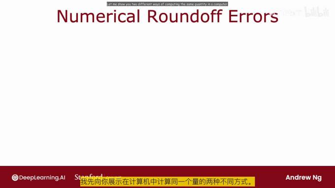
00:25方式一，我们可以设 x 等于一万分之二。
00:30方式二，我们可以设 x 等于一加一万分之一，减去一减一万分之一，你先计算这个，再计算这个，然后取差值。
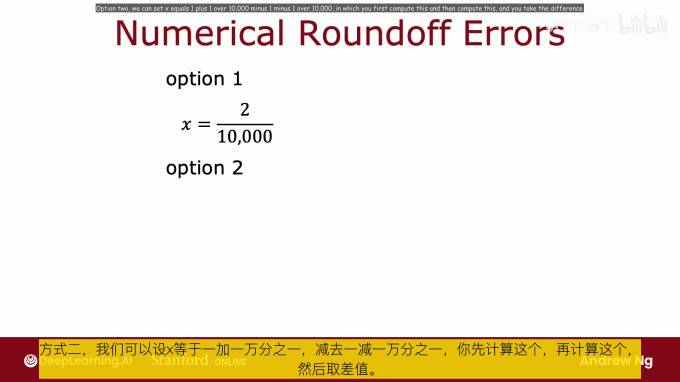
00:45如果你化简这个表达式，结果会等于一万分之二。
00:51让我在这个中演示一下。
00:54首先，设 x 等于一万分之二，并将结果打印到很多位小数精度。
01:05其次，让我设 x 等于，我坚持要计算一加一万分之一，然后从中减去一减一万分之一，再把它打印。
01:17嗯，好吧，这看起来有点偏差。
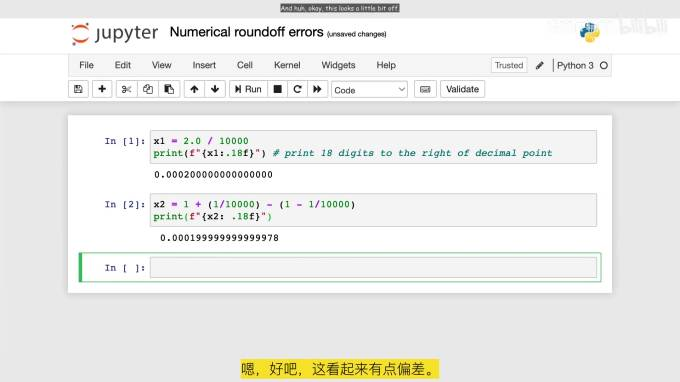
01:26因为计算机只有有限的内存来存储每个数字，在这里称为浮点数，根据你决定如何计算一万分之二这个值，结果可能会有或多或少的数值舍入误差。
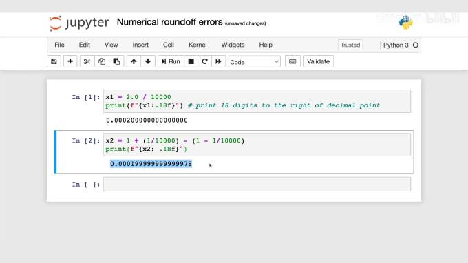
01:45事实证明，虽然我们一直用来计算 softmax 代价函数的方式是正确的，但有另一种不同的表述方式可以减少这些数值舍入误差，从而在 TensorFlow 中得到更精确的计算结果。
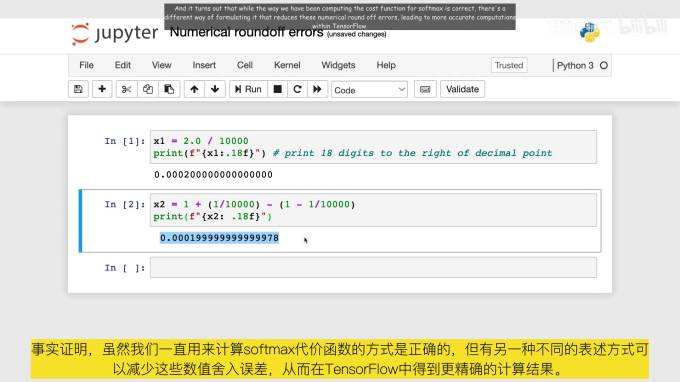
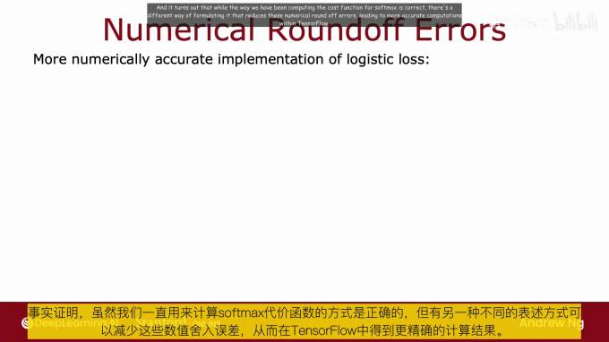
02:02让我先用逻辑回归更详细地解释一下，然后我们会展示这些思想如何应用于改进我们的 softmax 实现。
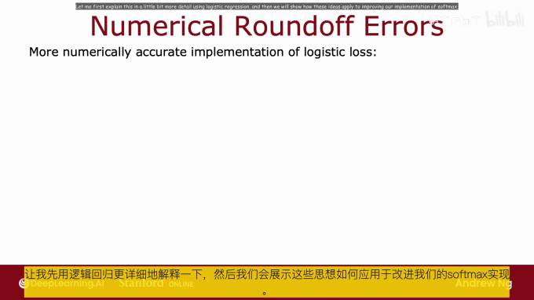
02:13那公，首先让我用逻辑回归来说明这些思想，然后再继续展示如何也改进你的 softmax 实现。
02:24回想一下逻辑回归，如果你想计算损失函数，对于给定的样本，你会首先计算这个输出激活值 A，即 g(z)，或一除以一加 e 的负 z 次方，T。
02:38然后你使用这里的这个表达式计算损失。
02:44事实上，对于使用二元交叉熵损失的逻辑输出层，代码看起来就会像这样。
02:56对于逻辑回归，这工作得不错。
02:59通常数值舍入误差没有那么大。
03:04但事实证明，如果你允许 TensorFlow 不必将 A 作为一个中间项来计算，而是，如果你告诉 TensorFlow 损失就是下面这个表达式，我所做的只是取 A 并将其展开成下面这个表达式，那么 TensorFlow 可以重新排列这个表达式中的项，并得出一种在数值上更精确的方式来计算这个损失函数。
03:35所以，原来的过程就像是坚持要计算中间值，以及另一个中间值，一减一万分之一，然后处理这两个值来得到一万分之二，这个原始实现坚持要显式地将 A 作为一个中间量来计算。
04:02但相反，通过直接在底部将此表达式指定为损失函数，它给了 TensorFlow 更大的灵活性来决定如何计算，以及是否要显式计算 A。
04:16你可以用来实现此功能的代码展示在这里。
04:22这段代码所做的是，将输出层设置为仅使用线性激活函数。
04:29并将激活函数，一除以一加 e 的负 z 次方，以及这个交叉熵损失，都放到这里的损失函数规范中。
04:42这正是那个 logits 等于 true 参数让 TensorFlow 去做的事情。
04:49如果你想知道 logits 是什么，它基本上就是这个数 z。
04:55因此，TensorFlow 将计算 z 作为一个中间值，但它可以重新排列各项，使得计算更精确。
05:04这段代码的一个缺点是它变得稍微不那么易读，但这使得 TensorFlow 产生更少的数值舍入误差。
05:14现在，在逻辑回归的情况下，这两种实现实际上都工作得不错，但是当涉及 softmax 时，数值舍入误差会变得更糟。
05:25现在让我们采纳这个思想，并将其应用到 softmax 回归。
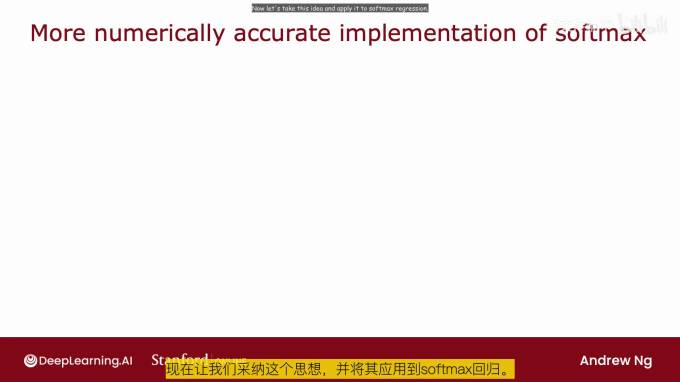
05:31回想一下，你在上一视频中看到的是按如下方式计算激活值。
05:38激活值是 z 一到 z 十的函数 g，其中例如 a 一，等于 e 的 z 一次方除以 e 的 z 下标 j 次方的和。
05:50然后损失是这个，取决于 y 的实际值，是某个 a 下标 j 的负对数。
05:57这就是我们分两个独立步骤进行此计算的代码。
06:04但是，如果你再次改为指定损失为：如果 y 等于一，就是该公式的负对数，依此类推，如果 y 等于十，就是这个公式，那么这赋予了 TensorFlow 重新排列各项并以一种数值上更精确的方式进行计算的能力。
06:32为了让你对 TensorFlow 为什么要这样做有点直观理解，事实表明，如果某个 z 值非常小，那么 e 的一个很小的负数次方会变得非常非常小。N。
06:43或者如果某个 z 值非常大，那么 e 的 z 次方会变得非常非常大。
06:51通过重新排列各项，TensorFlow 可以避免这些非常小或非常大的数，从而得出对损失函数更精确的计算 e。
07:01所以执行此操作的代码如下所示。
07:05在输出层，我们现在只使用线性激活函数。
07:10因此输出层仅计算 z 一到 z 十。
07:15而损失的整个计算则被整合到这里的损失函数中，我们再次使用了等于 true 参数。
07:28所以，这两段代码做的事情几乎完全相同，区别在于推荐的版本在数值上更精确，尽管不幸的是，它也稍微更难阅读一些。
07:41所以，如果你在阅读别人的代码时看到这个，并想知道这是怎么回事，它至少在概念上等同于原始实现，只是数值上更精确。N。
07:53逻辑回归的数值舍入误差没那么严重，但还是建议你使用底部的这个实现。
08:05并且从概念上讲，这段代码和你之前拥有的第一个版本做的是同样的事情，只是它在数值上稍微更精确一些。
08:16虽然缺点可能是理解起来也稍微更难一点。
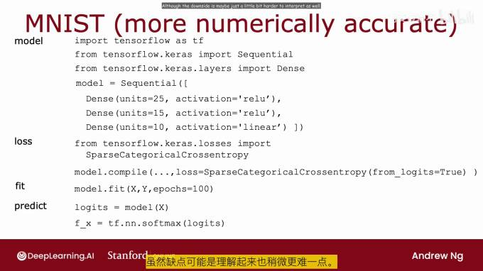
08:20现在，还有最后一个细节，那就是我们现在已经将神经网络改为使用线性激活函数，而不是激活函数。
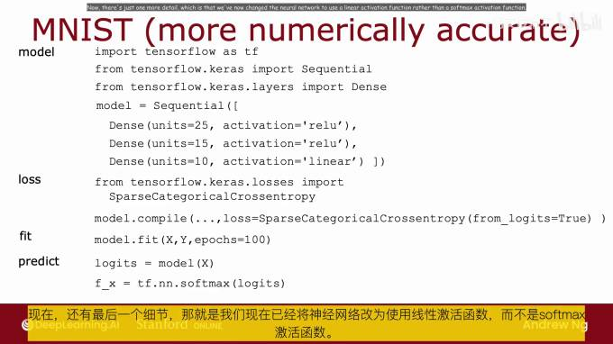
08:31所以神经网络的最后一层不再输出这些概率 A 一到 A 十。
08:39它改为输出 Z 一到 Z 十。
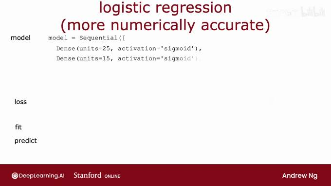
08:43我在逻辑回归的例子中没有谈到这一点，但如果你将输出逻辑函数与损失函数结合在一起，那么对于逻辑回归，你也必须像这样修改代码，对输出值进行处理，通过逻辑函数映射它，以实际得到概率。
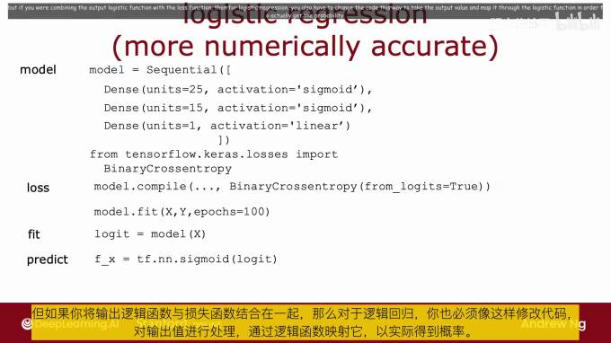
09:04现在你知道了如何使用 softmax 输出层进行多类别分类，以及如何以一种数值稳定的方式进行。
09:14在结束多类别分类之前，我还想和你分享另一种类型的分类问题，叫做多标签分类问题。
09:24我们下一视频再谈这个。